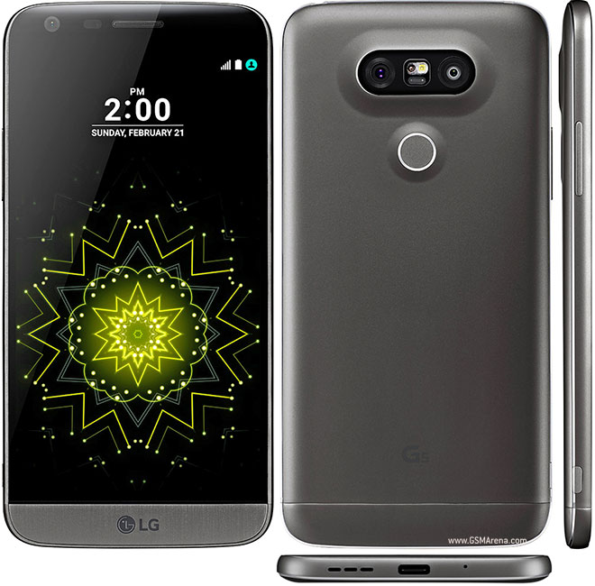

Celulares de baja gama:
bajo este nombre se identifican a aquellos teléfonos móviles que cuentan si bien cuentan con una cámara de fotos, esta es de baja calidad. Además de esto, incluyen un reproductor de música aunque de los más básicos, al igual que la memoria que presentan, que es bastante limitada. Los celulares de baja gama tampoco incluyen pantalla táctil y ésta suele ser de tamaño reducido. La conexión a Internet que ofrecen es bastante limitada y no cuentan con 3G. A pesar de que estos dispositivos son bastante limitados, siguen siendo muy utilizados por los usuarios ya que ofrecen servicios que, para quienes no son muy exigentes o lo usan de forma esporádica, satisfacen las necesidades que estos usuarios pueden tener, principalmente la de mantenerse comunicados con otros usuarios.
ejemplo de de gama baja
El moto g4 play es un celular de gama baja:
Celulares de gama media:
estos celulares, en cambio, ofrecen pantallas un poco más grandes que los anteriores, por lo que su calidad es bastante mayor y resultan mucho más prácticas para los usuarios. Además de esto, la cámara de fotos que tienen es de mayor calidad, al igual que los reproductores de MP3. Estos teléfonos móviles también ofrecen juegos, mensaje de texto, calculadora y distintas aplicaciones. Con respecto a la conexión a Internet, permite navegar con HTML y puede ocurrir que algunos modelos cuenten con 3G.
ejemplo de gama media
El lg g5 es un celular de gama media:

Celulares de gama alta:
los teléfonos móviles de alta gama ofrecen varias de las opciones antes mencionadas, pero con mejor calidad, como ocurre con la cámara de fotos o el reproductor de música. Además de esto, la conexión a Internet suele ser de mejor calidad y velocidad y ofrecen 3G. Además, cuentan con Bluetooth y como permiten conexión Wi Fi muchas veces no se venden con planes de Internet.
ejemplo de gama alta
El iphone 7 es un celular de gama alta: